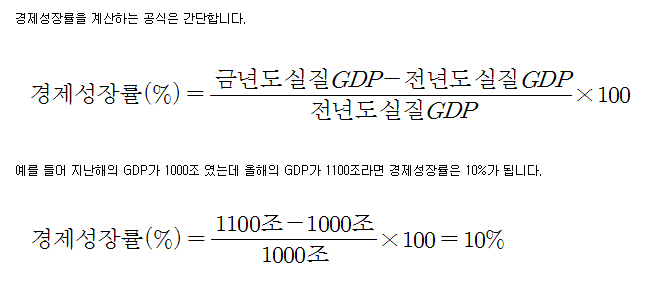
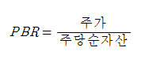

환매조건부채권(영어: repurchase agreements, RP) 은 금융기관이 일정 기간이 지난 후 확정금리를 보태 되사는 조건으로 발행하는 채권을 말한다.
* 주로 중앙은행과 시중은행 사이의 유동성을 조절하는 수단으로 활용된다. 한국은행이 시중 통화량을 조절하거나 예금은행의 과부족을 조절하는 수단으로 발행한다.
콜 금리 : 은행들 끼리 급전을 빌릴 때의 금리를 콜 금리라고 한다.
* 콜 금리가 오르면 우리가 은행에서 대출 받을 때의 금리가 오르고, 콜 금리가 하락하면 우리가 은행에서 대출 받을 때의 금리가 하락하기 때문입니다.
GDP
* 한국은행의 정의에 따르면 GDP(국내총생산)는 ‘한 나라 안에 있는 가계, 기업, 정부 등 모든 경제주체가 일정기간 동안 새로이 생산한 재화와 서비스의 가치를 시장가격으로 평가하여 합산한 것’입니다.
GNP
* GNP(국민총생산)는 세계 어디에서 생산되었든 상관없이 우리나라 국민이 생산한 것은 무조건 합쳐서 계산한 물질적 부입니다. 미국에 살고 있든 우간다 밀림 속에 살고 있든 대한민국 사람이 만든 것이라면 무조건 합친 것이 바로 GNP입니다.
경제성장률

전년 동기비 성장률
* 경제가 작년 같은기간보다 얼마나 성장했는지 따져 보는 것이 전년동기비 성장률입니다. 예를들어 올해 1분기(1월~3월)에 생산된 대한민국의 물질적부가 작년 1분기에 생산된 물질적 부보다 얼마나 증가했는지 조사한 것이 전년동기비 성장률입니다
전기비 성장률
* 경제가 직전 분기보다 얼마나 성장했는지 따져 보는 것이 전기비 성장률입니다. 예를들면 올해 2분기(4월~6월)에 생산된 물질적 부가 올해 1분기(1월~3월)에 생산된 물질적 부보다 얼마나 증가했는지 조사한 것이 전기비 성장률입니다
PMI
* 지수는 구매관리자, 쉽게 말해서 자재부장님들한테 ‘경제가 좋아질까요? 아니면 나빠질까요?’ 이렇게 물어보고 나서, 그 답을 모아 하나의 숫자로 표현한 것입니다.PMI지수의 기준점은 50입니다. 예를 들어 PMI지수가 50이라면 ‘경제가 좋아진다’고 대답한 자재부장님과, ‘나빠진다’고 대답한 자재부장님의 비율이 50대 50이라고 생각하시면 됩니다. 그리고 만약 PMI지수가 60이라면 ‘경제가 좋아진다’에 베팅한 자재부장임이 60명이고, ‘경제가 나빠진다’에 베팅한 자재부장님이 40명이라고 생각하시면 됩니다. 즉 PMI지수가 50을 넘어가면 자재부장님들이 ‘경제가 좋아진다’고 보는 것이고, 50 밑으로 떨어지면 ‘경제가 나빠진다’고 보는 것입니다.
채권 금리
채권도 부동산 주식 처럼 금리의 영향을 받는다. 금리가 올라가면 채권 가격은 내려가고, 금리가 내려가면 채권 가격은 올라간다. 즉 금리와 채권 가격은 반비례한다.
표면 금리, 시장금리
표면 금리
* 채권 만기 시점까지 변하지 않는 금리다. 쉽게 말해, 채권 증서에 적힌 이자율이다. 이 이자율은 채퀀 발생과 동시에 고정된다. 과거엔 채권 이자를 받으려면 증서에 이표를 뜯어내 발생 기관에 제출해야 했다.
시장금리
* 시장에서 채권의 종류별로 책정되는 금리다. 중앙은행의 기준 금리 조정, 경기 변동, 물가 등의 영향을 받는다. 가장 큰 영향을 받는 것은 수요와 공급이다.
https://punpun.co.kr/%EC%B1%84%EA%B6%8C-%EA%B0%80%EA%B2%A9%EA%B3%BC-%EA%B8%88%EB%A6%AC%EA%B0%80-%EB%B0%98%EB%8C%80%EB%A1%9C-%EC%9B%80%EC%A7%81%EC%9D%B4%EB%8A%94-%EC%9D%B4%EC%9C%A0/
기준금리
한국은행 기준금리는 한국은행이 금융기관과 환매조건부증권(RP) 매매, 자금조정 예금 및 대출 등의 거래를 할 때 기준*이 되는 정책금리로서 간단히 ‘ 기준금리’(base rate)라고도 한다.
* 한국은행은 기준금리를 7일물 RP매각시 고정입찰금리로, 7일물 RP매입시 최저입찰금리(minimum bid rate)로 사용한다. 그리고 자금조정 예금 및 대출 금리를 기준금리에서 각각 -100bp 및 +100bp 가감하여 운용한다.
한국은행 금융통화위원회는 물가 동향, 국내외 경제 상황, 금융시장 여건 등을 종합적으로 고려하여 연 8회 기준금리를 결정하고 있다. 이렇게 결정된 기준금리는 초단기금리인 콜금리에 즉시 영향을 미치고, 장단기 시장금리, 예금 및 대출 금리 등의 변동으로 이어져 궁극적으로는 실물경제 활동에 영향을 미치게 된다.
HTS
HTS는 홈트레이딩시스템(Home Trading System)으로 개인 투자자가 객장에 나가지 않고, 집이나 사무실에서 주식 거래를 할 수 있는 프로그램을 뜻합니다. 인터넷이 활발하게 보급되지 않았을 때는 직접 객장에서 나가서 주식을 매매해야 했습니다. 그러나 요즘에 객장에서 주식을 매매하시는 분들은 거의 찾아볼 수 없습니다.
PER
PER는 Price Earnings Ratio의 약자로 우리나라 말로는 주가수익률이라고 합니다.
PER는 주가를 주당 순이익(EPS)로 나눈 값입니다.
PER = 주가 / 주당 순이익(EPS)
간단하게 예를 들면 현재 주가가 만원인데 주당 순이익이 천원이면 PER는 10배이다.
이 PER가 낮을수록 해당 종목이 수익률에 비해 주가가 낮다는 것이고 저평가 되어 있다고 볼 수 있다.
주가는 현재의 가치보다 미래의 가치가 중요하므로 각 증권사마다 내놓는 기업의 예상순이익으로 미래의 PER를 만들어 저평가된 종목을 골라 투자하는것도 한 방법이 될 수 있다.
반대로 PER 가 낮다는 것은 반드시 저평가되어 있는 종목에만 해당 되는것은 아니다. 해당 기업의 미래가 불확실하거나 발전 가능성이 낮다면 전년도 순이익이 증가했음에도 주식은 이런 요소를 반영하여 이미 떨어진 가격일 수 있다. 이미 떨어진 가격으로 PER를 계산한다면 PER 가 낮게 나올 수 밖에 없다. 저 PER 전략을 구사하기 전 반드시 이런 사항을 체크해야한다.
* EPS (주당 순이익) = 기업의 당기순이익 / 총 발행 주식수
- 당기순이익 : 기업이 일정기간동안 벌어들인 수익에서 사용한 비용을 제외하고 남은 순수하게 남은 이익
PBR(Price to Book Ratio : 주가순자산비율)은 주가를 주당순자산으로 나눈것입니다.

예를 들어 보겠습니다.
"(주)별로 안 엄청나"의 주가가 2000원이고 주당순자산이 1500원이라면 주가순자산비율은 얼마가 될까요? 너무나 쉬운 계산이죠?
2000/1500=1.333이니까 "(주)엄청나"의 주가순자산비율은 1.3이 됩니다.
PBR의 의미
만약 주가순자산비율이 1 이라면 주가가 순자산의 1 배로 팔린다는 이야기고, 주가순자산비율이 100 이라면 주가가 순자산의 100 배로 팔린다는 이야기 입니다.
주가가 순자산의 1 배로 팔리든, 100 배로 팔리든 그게 무슨 상관이냐구요? 물론 이런 생각을 할 수는 있습니다. 하지만 주가순자산비율은 너무나 중요합니다.
그 이유는 이러합니다. 주당순자산은 공장이 문을 닫을때 주식 1주당 떨어지는 돈을 의미합니다. 공장이 문을 닫을때 주식 한장당 1만원이 떨어진다면 주가도 당연히 1만원은 되어야 합니다.그리고 주식 한장당 10만원이 떨어진다면 주가도 최소한 10만원이 되어야합니다. 유식하게 말해서 주가순자산비율이 최소한 '1'은 되어야 한다는 이야기입니다.
이해가 가시죠 ?
실제로 주식시장을 보면 주가순자산비율은 1 에서 왔다 갔다 합니다. 즉, 주당순자산이 10000원이면 주가도 대충 10000원 정도 하고, 주당순자산이 200000원이면 주가도 대충 200000원 정도 합니다.
그런데 주당순자산은 10000원 밖에 안되는데 주가가 200000원 인 경우가 있다구요. ? 물론 주가가 주당순자산에 따라 움직이기는 하지만 절대적인 것은 아닙니다. 주당순자산이 비록 10000원 밖에 안되어도 앞으로 성장성이 높은 기업이라면 주가가 높을 수도 있는 것입니다.
대체로 보아 이익이 높으면 주당순자산이 많고, 이익이 작으면 주당순자산도 적기 때문에 평균적으로 주당순자산과과 주가가 비슷하다는 이야기이지 절대적으로 주당순자산과 주가가 일치하지는 않으니 오해 없으시기 바랍니다.
주식시장에서 주가수익비율을 이용하는 방법은 다음과 같습니다.
주가순자산비율이 0.7 이하면 매수를 적극적으로 고려해 보라고 합니다. 즉, 주가가 주당순자산에 비하여 낮게 평가되고 있다면 매수를 적극 고려해 보라고 합니다. 그리고 주가순자산비율이 0.7 - 1.5 사이라면 다른 지표와 비교하면서 매수를 고려해 볼 만 합니다. 하지만 주가순자산비율이 1.5 이상이면 조심을 할 필요가 있습니다.
ROE - 수익성 지표 ( 자기자본 이익률 )
ROE는 Retur On Equity의 약자로 우리나라 말로는 자기자본이익률이라고 한다.
기업이 자본을 이용하여 얼마만큼의 이익을 냈는지를 나타내는 지표로 당기순이익의 값을 자본 값으로 나누어서 계산한다.
예를 들어 자본 총액이 1억원인 회사가 1000만원의 당기 순이익을 냈다면 ROE는 10%가 된다.
위에서 살펴본 PER, PBR, ROE는 모두 시가총액, 당기순이익, 자본총액과 관련이 있고 이 세가지 식을 정리해서 보면 아래와 같다.
PER = 시가총액 / 당기 순이익
PBR = 시가총액 / 자본총액
ROE = 당기순이익 / 자본총액
이를 정리해보면,
ROE = EPS / BPS
ROE = PBR / PER 이 된다.
보통 ROE 는 성장가능성이 얼마나 큰가를 , PER는 주가 대비 수익성을 , PBR은 자본 대비 얼마나 주가가 고평가 되어 있는지를 나타낸다.
ROE 평가시 유의할 점
* ROE 수치의 변동폭을 잘 살펴 본다
* 부채 비중을 파악한다.
* 동종업계 간의 ROE를 비교해본다.
ROA ( Return On Asset - 자산 수익률 )
ROA는 당기 순이익을 총자산을 나눈 값에 100을 곱하여 얻어지는 백분율이다. 자산에 비해 당기 순이익이 많을 수록
ROA가 증가하며, 당연히 ROA가 높을 수록 기업이 이익을 많이 내고 있다는 의미가 된다.
정크 본드(junk bond)
정크 본드(junk bond)는 말 그대로 "쓰레기 같은 채권"이라는 뜻이며 과거에는 신용 등급이 높았지만 경영 악화나 실적 부진으로 신용 등급이 급격하게 낮아졌을 때 그 기업이 발행했던 채권을 말한다.
2020-04-01
* 코로나의 확산 추이
* 매일의 추이를 지켜봐야함.
* 사망자 증가 속도가 빨라지고 있음
* 4월 6일 주의 확산세가 덜한지 확인되어야 한다.
* 유가의 하락
* 코로나의 영향이 반영된 것, 반영되지 않은 것
* 얼마만큼 반영하고 있는지 - 어떤 지표가 나오는게 중요한가.
* 경제가 1분기, 2분기, 3분기에 어떻게 될지?
연기금에 대하여
연기금은 주로 기계(시스템)으로 움직이는데, 이 기반이 되는 것이 패시브 운영/스탑로스를 기반으로 한다.
운영 목표
실질가치를 유지하는 것 , GDP , 물가성장률을 따라가야함.
리스크 매니지 먼트 : 절대 수익률 커버, 로스컷
변동성 / 위험 : 변동성이 너무 큼 - 손절매
공제회
조달 코스트
절대적인 반환 기준
개인의 투자 : 삼성전자 - 우량주
학급 경험의 의한 것
위기의 삼성전자
지금 여기는 바닥이 아니다.
바닥이라고 느낄 때 또 지하실이 있고, 그 아래 또 지하실이 있다 ( 3단계 )
일반적으로 바닥이라고 생각하고 있음
IMF 1997년도 말 주가의 바닥은 그 다음해였다.
삼성전자가 관료하되면 망한다.
장기 투자의 개념 - 안파는 것
주식을 언제 팔아야 하는가?
그 회사가 구조적으로 문제가 생길 때,
내가 수익이 날 때 판다.
2020-04-03 21:00
* 여신과 양적완화의 구분
* 이번에는 전부다 여신( 돈 빌려주는 것 )
* 양적완화 : 디플레이션 - 자산을 매입하는 것
* 자산의 가격을 올려주는 것
* 자산을 매입하는 것은 그 매입한 곳과 운명을 같이한다.
* 여신 : 인플레이션 - 인플레이션에서 강할 것이냐? - 여신의 핵심은 단기 : RP는 7월, 10월짜리, 단기가 거의 없음
* 갚으라고 의무를 주는 것
* 중앙은행이 사주는 것 : 여신
* 기업의 부도리스크 - 기업도산 - 금융 영향-에 대해서는 상당부분 깨졌음
유가하락 - 디플레이션
유가하락 - 에너지 가격 하락 - 산유국이 어려워짐
달러로 빚을 내는 경우, 무섭다, 달러로 빌리면 달러로 갚아야 한다. 그런데 달러가 초 강세라고 하면 달러를 빌린 이머징 국가는 상당한 부담이 발생한다.
자원의 가격이 떨어진, 달러의 강세 때문에 자산이 떨어짐
이머징 마켓 아래가 프론티어 마켓
금융위기 때보다 그 안전판(대응)이 이례적인 속도로 진행되고 있다. 충격에 대해서는 과거에 비교할 수 있으나 대응에 대해서는 전례와 비교할 수 없을 만큼 빠른 대응을 하고 있다.
은행 시스템 : 은행권에 금액은 많은 편이다. 회사채 시장이 현재 충격이고 은행권에는 영향을 미치지 않고 있다. 은행권이 충격을 받으면 그것은 개인들에게 엄청난 충격으로 다가온다.
시장이 활성화 되었을 때 은행이 엄청난 유동성을 제공할 것이다.
현재 할 수 있는 것은 브릿지역할은 하는 것이다. 재정과 통화에서 다리를 놓고 지원을 해주고 있는 상태이다.
통화정책, 재정정책이 큰 효과가 있었다는 것을 체감할 수 있다.
이번에 연준에서 하는 것은 양적완화가 아니라 연준에서 하는 것은 돈을 빌려주는 정책을 하는 것이다. 양적완화는 자산가격을 상승을 필수적으로 하지만, 여신은 자산가격을 필수로 하지 않는다.
무제한 양적 완화를 한다고 했을 때, 기간물을 사들인다. 10년짜리 장기국채를 사들이는 것을 양적완화가 아니라고 하기 어렵다.
SPB
한국은 양적 완화가 아니다. - 이것은 어디까지나 여신이다. 한국은해에서 RP를 무제한으로 제공한다고 하는 것은 단기 영역에서 자금을 빌려주는 것이므로 양적완화가 아니다.
3개월 지나면 만기가 돌아오는 구조이다. - 3개월이 지났을 때, 금액에 대한 판단을 할 수 있음 - 한국 은행
한국판 양적완화 시작됬다는 이야기는 잘 못되었다.
보이는 위험
어떤 리스크가 있느냐?
1,2월 달에는 안보이는 위험이 보이는 위험이 되면 어떻하는가?
유가, 이머징 마켓 디폴트, 채권 시장 등등의 현상 - 회사채 발행이 급격하게 늘어나고 있어
하이일드 채권 시장?
미국의 재정적자를 늘리는 방식
적자국채
일드캡 - 기준 금리라는 것은 초 단기 금리,